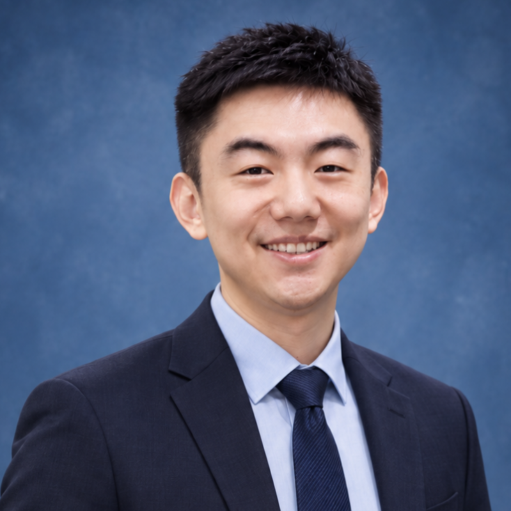
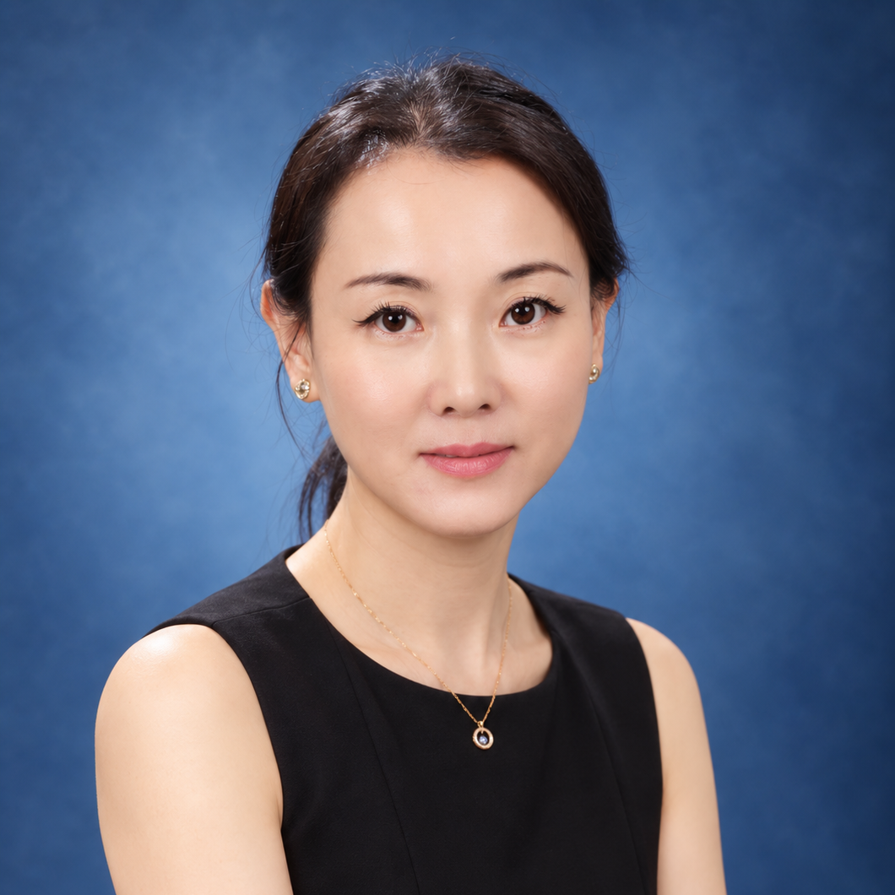

团队总览
本招聘由西安交通大学第一附属医院与西安交通大学生命科学与技术学院联合设立，依托双方在临床医学与生物医学工程领域的优势资源，面向人工智能、影像医学与核医学、生物医学工程、计算机科学、神经工程等学科背景的优秀青年学者，招收医学交叉博士后研究人员。
西安交通大学第一附属医院
国家卫生健康委委属委管医院、国家首批三级甲等医院，全国首批暨陕西省首家"辅导类"国家医学中心创建单位。医院编制床位 2500 余张，年门诊量近 300 万人次，年出院患者 14 万余人次，承担国家医学中心、国家区域医疗中心建设任务。医院拥有国家临床医学研究中心、国家中医药管理局重点研究室、陕西省重点实验室等高水平科研平台，医学影像与核医学、神经内外科、急诊与重症医学等学科处于国内先进水平。
西安交通大学生命科学与技术学院
西安交通大学的传统优势学院之一，前身为 1985 年创建的生物医学工程与仪器系。学院设有生物医学工程、生物技术、临床医学、基础医学等学科，拥有生物医学工程国家一级重点学科，建有国家生物医学工程人才培养基地、陕西省生物医学工程重点实验室、陕西省精准医学与健康工程研究中心等多个省部级及以上科研平台，在脑科学与神经工程、医学影像智能分析、生物力学与康复工程等方向具有鲜明特色，是医工交叉人才培养与科学研究的重要基地。
一、博士后研究方向
团队主要围绕"脑—器交互重大脑疾病机制及精准神经调控"开展医工交叉研究，本轮计划招聘博士后不超过 3 名，重点支持以下方向：
围绕多模态医学图像（MRI、PET、EEG）与深度学习、多模态融合、医学大模型与影像生物标志物的融合分析，构建面向重大脑疾病的智能辅助诊断、预后预测与个体化干预决策支持系统。
聚焦创伤性脑损伤、神经退行性疾病、精神类疾病等重大脑疾病，解析脑结构与功能重塑、脑网络异常及脑—器交互机制，明确影像表型与认知功能、疾病转归及个体化干预之间的关系。
通过脑机接口、神经调控技术，结合多模态影像与人工智能算法，开展个体化靶点识别与精准调控方案研究，推动脑疾病干预从"经验治疗"走向"精准治疗"。
二、应聘条件
- 基本素质：品学兼优、身心健康、科研执行力强、有责任心、具有良好的团队合作精神，无科研诚信负面记录。
- 专业要求：已获得（或即将获得）人工智能、影像医学与核医学、生物医学工程、计算机、神经工程等相关学科的博士学位；获得博士学位不超过 3 年，年龄一般不超过 35 周岁，优秀者可适当放宽。
- 能力要求：具有独立的课题设计能力和扎实的实验/算法操作能力，能够在合作导师指导下独立开展原创性研究工作；具备良好的科研创新潜力、英文阅读与论文写作能力。
- 成果要求：以第一作者身份已发表过一篇及以上 SCI 论文，具有较强的学术发展潜力。
- 科研态度：恪守科研诚信与学术道德规范，具有团队协作精神和进取意识，全职投入博士后研究工作。
三、薪酬待遇
医学交叉博士后分为 A 类、B 类两类，均实行年薪制，并按学校相关规定评定：
前两年按 20 万元/年发放，中期考核合格及以上者后两年薪酬提高至 25 万元/年，并补发前两年薪酬共计 10 万元。
- 中期考核不合格者将转为 B 类管理
- 基本工资之外的绩效奖励根据科研贡献发放
- 发表论文可参照一附院奖励标准获得额外奖励
按 16 万元/年发放。中期考核优秀者可申报 A 类，经教师聘任委员会审核、专班审议入选后，薪酬按 25 万元/年执行。
- 享有同样的社保、公积金与人才公寓等福利
- 子女享受西安交大附属学校入学政策
- 课题组根据论文与基金提供可观绩效奖励
其他福利与保障
- 缴纳社会保险和住房公积金，享受学校与医院的医疗保障；
- 提供人才公寓住房，协助解决青年学者过渡期居住问题；
- 享受学校子女入学政策（西安交大附属幼儿园、小学、中学在全市排名均为前五）；
- 课题组根据研究贡献、论文发表、基金项目等情况给予可观的绩效奖励，发表论文可参照一附院奖励标准获得额外奖励；
- 所有相关福利待遇按照学校和医院最新规定政策执行。
※ 详细公告请参见：《西安交通大学医学交叉博士后招聘公告》
四、职业发展
- 聘期考核合格且满足学校人才计划条件或高级专业技术职务岗位晋升条件者，可申请学校相应岗位；满足附属医院晋升条件者，也可申请晋升附属医院相应岗位，晋升后人事关系转入附属医院；也可出站后申请评定副高级专业技术职务资格。
- 聘期内提前完成合同任务且满足学校人才计划条件、高级专业技术职务岗位晋升条件或附属医院晋升条件者，可随时申请相应岗位。
- 团队为博士后提供跨学院、跨医院、跨学科的联合指导，支持形成独立研究方向与可持续发展的成果链；打通"临床问题—多模态数据—机制解析—高水平论文—国家项目—青年人才"的成长路径。
五、双导师联合培养：临床需求牵引 × 工程技术赋能
围绕重大脑疾病，贯通机制解析、影像标志物与精准干预。

长期从事创伤性脑损伤及重大脑疾病的多模态定量影像、脑网络机制、人工智能分析与精准神经调控研究，重点关注影像表型与认知功能、疾病转归及个体化干预之间的关系。
学术任职：陕西省中西医结合学会核医学分会常务委员；中华医学会核医学分会大数据与人工智能工委会委员。

长期致力于智能影像诊疗技术及装备研发，主持国家重点研发计划课题 2 项、国家自然科学基金面上项目 5 项，国防基础加强技术领域基金、军队后勤生安专项课题等多项国家级与省部级项目。
代表性成果发表于 Radiology、Advanced Science、JNNP、BJPsy、Genes & Diseases、NeuroImage 等国际高水平期刊；学术影响力方面，H-index 37，SCI 总他引 3959 次，获陕西科学技术一等奖等科研奖励 6 项。
学术任职：中国针灸学会针灸医学影像专业委员会副主委；中国针灸学会脑科学产学研创新联盟副理事长；世界华人神经创伤学会（总部位于美国）执行委员会委员。
联合优势
为博士后提供跨学院、跨医院、跨学科的联合指导，由医学与工学双导师团队共同指导课题设计与论文发表，确保课题立足生物医学应用、产出高水平研究成果。团队项目经费充足并得到学校、医院的大力支持，受多项国家自然科学基金、国家重点研发计划等项目资助。
六、申请方式
本招聘长期有效，学校申报系统随时可提交申请。来信请说明应聘岗位并附个人简历，应聘材料将予以保密。
申请材料
- 个人简历（含教育背景、科研经历、发表论文清单等）
- 研究工作简介
- 代表性成果（论文 PDF、专利证书等）
- 博士后研究计划
七、招聘周期
学校申报系统随时可以提交申请。材料初审通过后，将由团队与合作导师共同组织面试与考核，欢迎海内外优秀青年学者随时联系咨询。
期待优秀的您加入我们，共同推动脑疾病诊疗的临床与转化研究！